Suppose in lab, I say to do "SRM 564, D2, 250-pointer". This is how you do it. I'm assuming that you already have a topcoder account. First, go to www.topcoder.com/tc. The upper lefthand corner of the web page will look like:
| 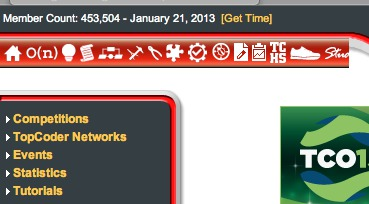 |
Click on the "O(n)," and it will launch the competition applet. That may require you to download some Java software. Go ahead and do what you have to do. Once you log in, you'll be in the main lobby with a window like this:
| 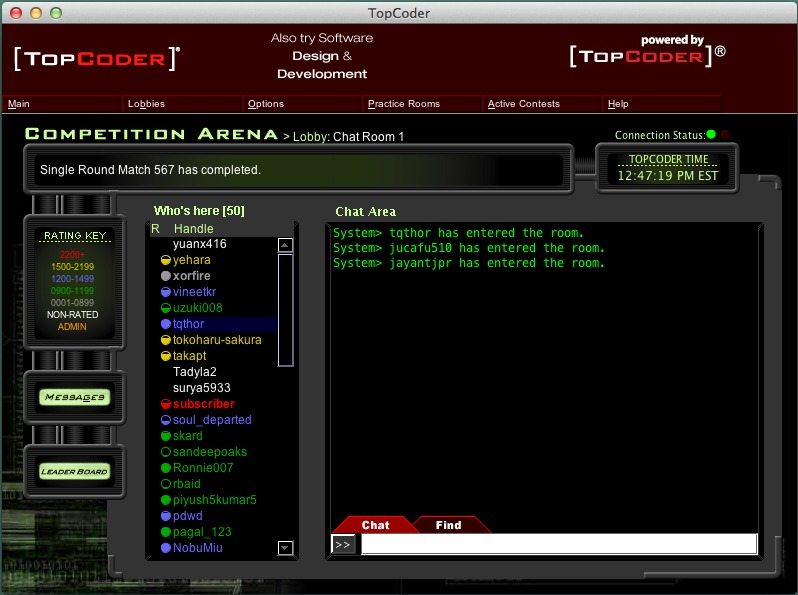 |
Click on "Practice Rooms", then "SRMs", and then find "SRM 564," just like I do below. The SRM's are numbered consecutively, so it shouldn't take you too long to find the right one:
| 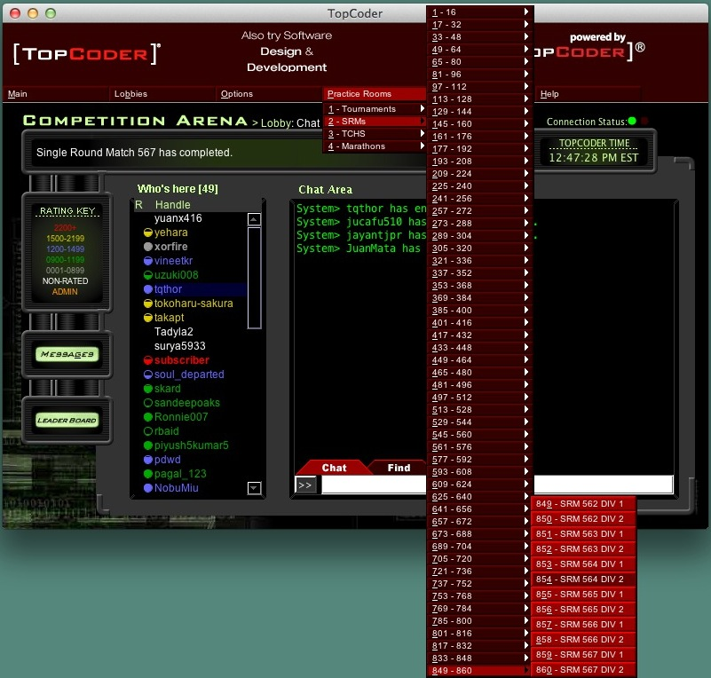 |
That will bring you to the competition arena for SRM 564, D2 ("SRM" stands for "single round match."). Each SRM has two divisions. Division one is hard, and division two is easier. In this class we'll focus on D2 problems for the most part. Now, the "Select one" drop box typically has three problems to try, with differing point values -- below, I'm choosing the 250-point problem:
| 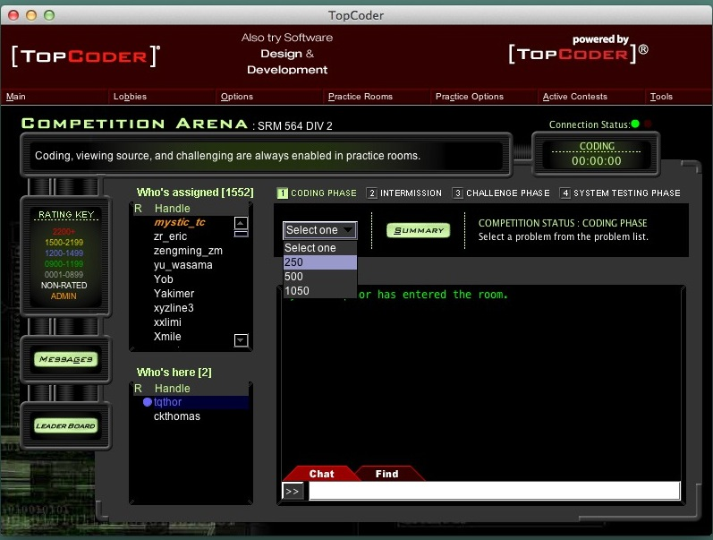 |
This pops up a new window which you may have to mess with to see everything. However, it will have two sub-windows. One has a problem description, and one has a programming area:
| 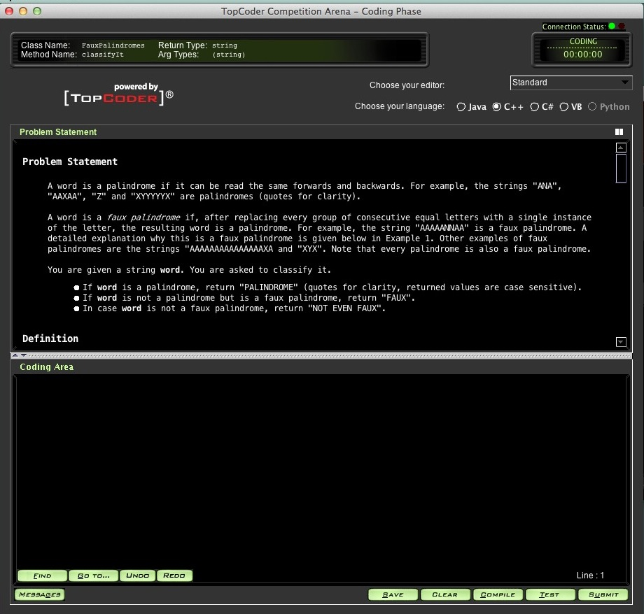 |
The problem statement tells you what problem to solve. In this one, you'll be given a string, and you need to state whether it is a palindrome, a "faux" palindrome, or neither. If you scroll the top sub-window, you'll see a "Definition".
| 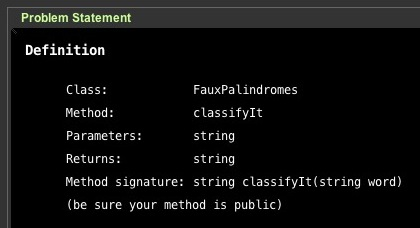 |
What this says is that you need to define a C++ class called FauxPalindromes, and that class needs to have a public method called classifyIt. It will have one parameter, which is the input string, and it must output a string.
If you scroll further, you'll see "Constraints," which tell you constraints on the input. The constraints are often helpful for finding a solution. Then after the constraints, you'll see "Examples":
| 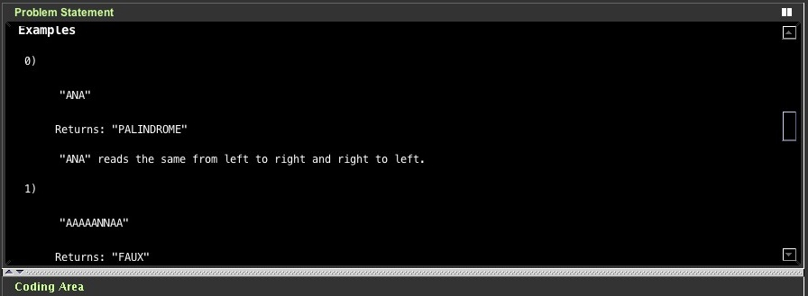 |
The examples are usually very helpful, but beware of proof-by-Cosmo. It's very easy to get all of the examples right and still have a program that's wrong.
Now, you want to start coding. The first thing you need to do is define the class and the method, and then below that, implement the method. I do that below. My program isn't correct, but I just want to get something compiling. I personally don't like to implement methods inside my class definition. That's why my implementation is below the definition:
You'll also notice that I've changed the name of the parameter twice. In the problem description, it's "word." In my class definition, it's "s" and in my implementation, it's "w." That's perfectly fine -- as long as the types match the definition, I can name them anything I want.
| 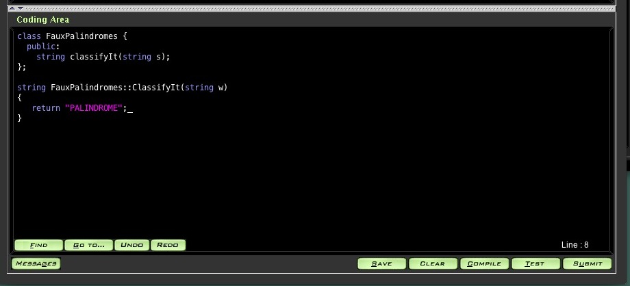 |
I click "Save", to save the program on topcoder's server, and then "Compile" for topcoder's server to compile the program. My compilation doesn't work:
| 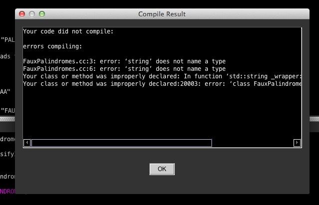 |
String doesn't name a type? Oh -- I forgot my include statements. I fix that and my compilation still fails. You can see my include statements there behind the "compile result" window:
| 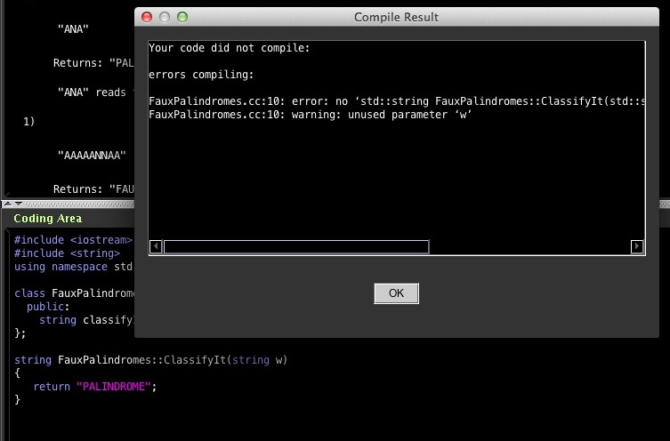 |
I have a bug on line 10, and I can't really read what it is. When I enlarge the "compile result" bug, I see the whole thing:
| 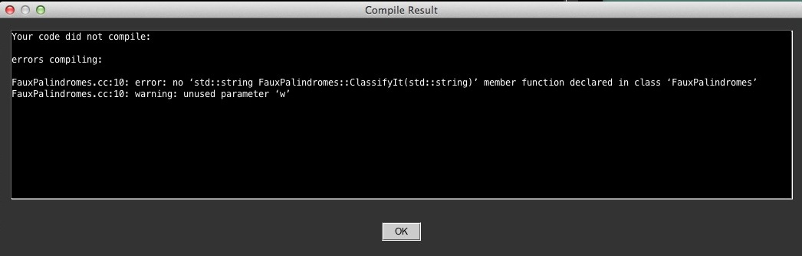 |
This is one of those frustrating bugs when you're just starting out. It says that ClassifyIt is not defined in the class, but it looks as though I've defined it. The problem is that I've capitalized the "C" in my implementation, but not in the class definition. I go back to the "Problem Statement" window and see that the "C" should be lower case, so I fix it.
Now I compile, and I still get the warning that I'm not not using w, but that's ok -- I just want to get something compiling. After you have successfully compiled, you can test your program with "Test." That allows you to test each example, and you can enter your own input if you want as well. Here, I get ready to test Example 0:
| 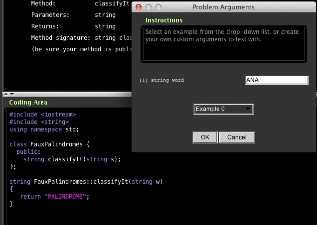 |
I click OK, and it shows me the results:
| 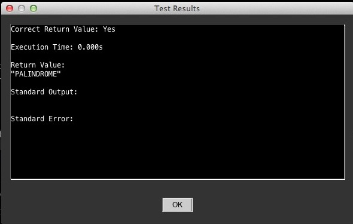 |
I got it right!!!! That's just because ANA happens to be a palindrome. Obviously, if I try example 1 it will fail. You'll also note that it tells you execution time -- your program has to run in under 2 seconds. That can be a challenge with some programs, but not this one.
Ok -- I program up a solution with the following strategy (which is incorrect, by the way). I'm going to create a string t, which is created from the non-repeating characters of w. I'll test t to see if it's a palindrome. If not, I return "NOT EVEN FAUX." If it is, then I test to see if t equals w. If so, then the original is a palindrome, so I return "PALINDROME." If t doesn't equal w, then it's "FAUX."
You'll note that I have a cout statement that prints w and t. Topcoder ignores print statements, which is nice. It compiles with no warnings or errors:
| 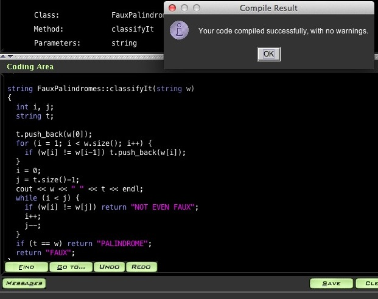 |
It works fine on examples 0 and 1 -- here's the output window of example 1. You can see the my cout statement there in "Standard Output":
| 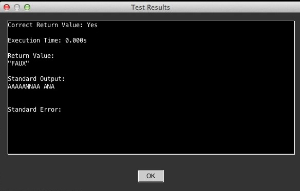 |
Since Topcoder competitions are timed, I decide that my program has to be right, so I click "Submit" and submit it. It tells me that I received 213.41 points!!
| 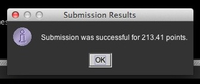 |
Now, just because submission is sucessful doesn't mean that your program is correct. You need to close your program window and click on "Run System Test," which is under "Practice Options:"
| 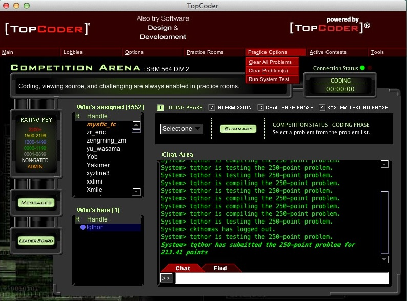 |
Now the Topcoder servers run a battery of tests on your program, and if any test is incorrect, you get a zero. It's hard on the self-esteem, and it's what has just happened to me:
| 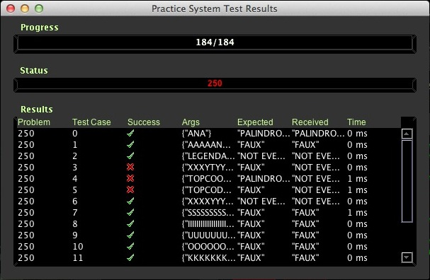 |
Looks like I've got a few cases wrong. You can double-click on any of the test cases, and it will tell you the input, the expected output and your output:
| 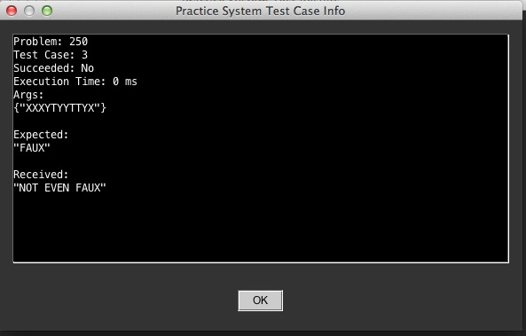 |
Yup. That should have returned "FAUX." Test case #3 happens to be an example, so I reopen the programming window and test example 3:
| 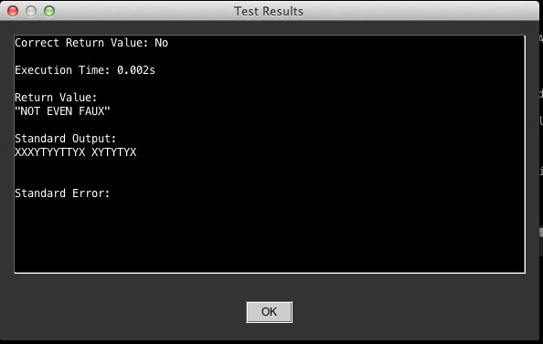 |
Hmmm. T looks correct, and it is indeed a palindrome. What gives? When I probe further, I realize that I'm testing w[i] and w[j] inside my while loop, when I should be testing t[i] and t[j]. Duh. So, I fix it, test example 3, and submit:
| 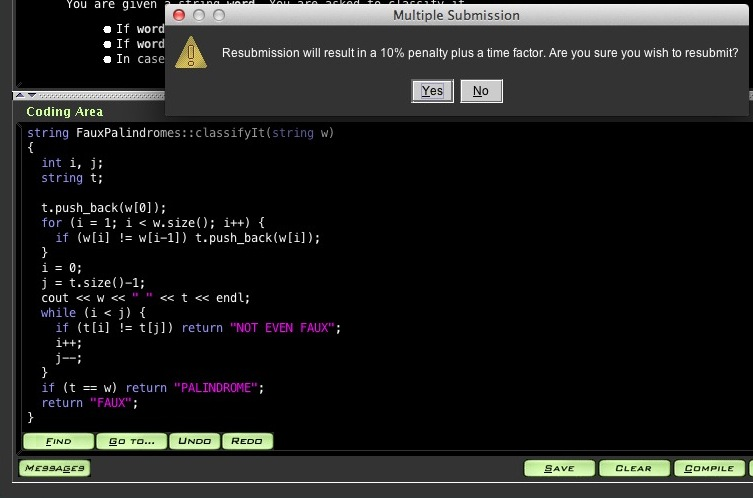 |
You can see the bug fix there in the coding area. I'm going to be assessed a 10% resubmission penalty. So it goes:
| 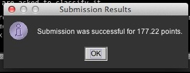 |
177.22 isn't that bad. I close the window and run the system test again:
| 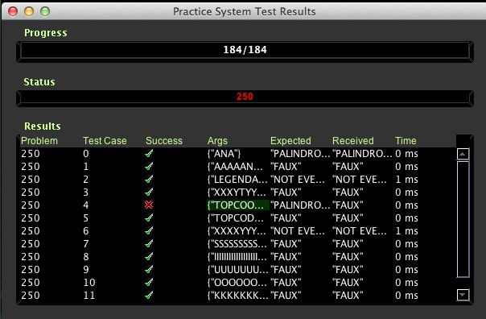 |
DANG IT!!!! I double-click test case 4 and see the following:
| 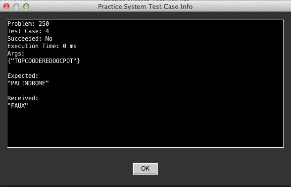 |
Oh. If the original is a palindrome with repeated letters, you need to report that as a palindrome and not a faux palindrome. My fix for this is, in my opinion, inelegant. Before constructing t, I simply test to see if w is a palindrome:
| 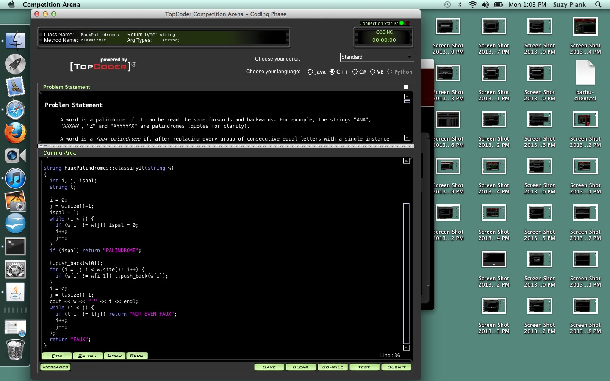 |
Compile, test, submit. Yes, another 10% penalty:
| 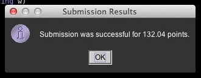 |
That's a sucky score for such an easy program. Whatever.
After a few seconds of anxiety, I see that the system test has passed:
| 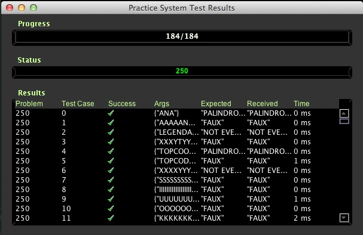 |
YAY!
Topcoder problems utilize two skills: problem solving and programming. Typically, the hard part is the problem solving, and often pencil and paper are better tools for solving the problem than a computer. When you've solved the problem, you have to program it. For me, that part is usually trivial once I've figured out how to solve the problem. For you, it will be harder, because you are learning, but I want you to get practice. This is why we do Topcoder in labs.
A final caveat. Topcoder has two flaws as a teaching device. The first is that you're so focused on speed that you write icky programs. For example, in the program above, I should have written a palindrome testing procedure. Then I could call it on w, then if necessary create t and call it on t. That would be cleaner, and it would be less bug prone because I'm not writing two separate palindrome testers. I'm not too worried about this flaw. You should know when you're writing bad code for speed, and when you should slow down to write good code. I.e., your homeworks should have good code.
The second flaw is that you have a mistake, and instead of slowing down to figure it out, you simply make random changes to your program until it passes the system test. When you do that, you are not learning anything, so I really want to recommend that you don't do it. Slow down, and figure out what's wrong.